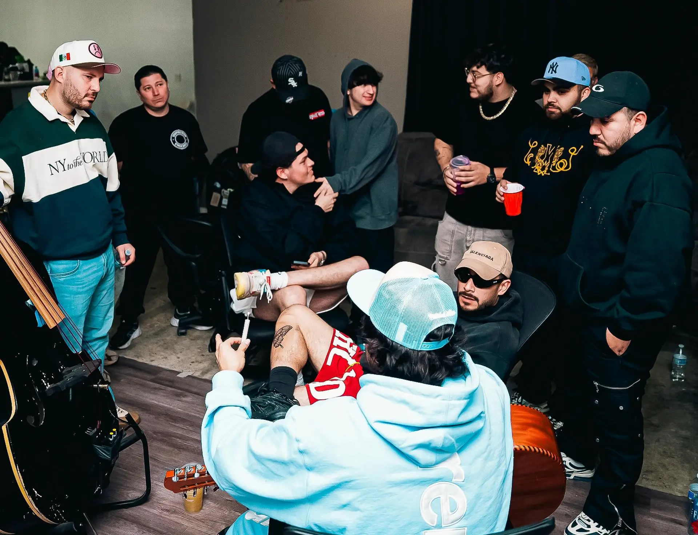

Fuerza Regida fue fundada en el año 2015 en San Bernardino, California, por un grupo de jóvenes mexicoamericanos liderados por Jesús Ortiz Paz. Inicialmente comenzaron tocando covers en fiestas locales bajo el nombre "Grupo Raimez". En 2017 adoptaron el nombre actual, reflejando su intención de convertirse en una fuerza dominante dentro del regional mexicano. Su gran salto llegó en 2018 con la canción "Radicamos en South Central", que se volvió viral. A partir de ahí, firmaron con sellos como Rancho Humilde y Lumbre Music, iniciando su camino hacia el éxito. Su propuesta musical, centrada en corridos tumbados y letras que retratan la vida real, conectó con una nueva generación de oyentes que buscaba algo distinto a lo tradicional. La banda consolidó su estilo combinando la tuba, la guitarra y el requinto con influencias del hip hop y el trap. Gracias a su autenticidad y presencia digital, captaron la atención de sellos como Rancho Humilde y colaboraron con artistas emergentes como Natanael Cano y Peso Pluma. A partir de ahí, comenzaron a llenar escenarios en ambos lados de la frontera, llevando su mensaje a miles de fanáticos. Hoy, Fuerza Regida representa una voz fuerte del barrio, con una identidad firme dentro del panorama musical latino.
Desde sus inicios, la banda se enfocó en crear canciones que hablaran sin filtros de lo que viven muchos jóvenes: lucha, orgullo, barrio y sueños grandes. Su honestidad musical fue clave para formar una base sólida de fans que se identificaban con cada verso. No buscaban encajar en moldes; querían sonar reales, y eso los hizo diferentes desde el principio. A medida que su música empezó a viralizarse, Fuerza Regida mantuvo sus raíces intactas. No olvidaron de dónde venían, ni a la gente que los apoyó desde las primeras tocadas. Esa lealtad a su esencia ha sido una de las columnas que sostiene la banda. Cada nuevo tema es un recordatorio de que siguen siendo los mismos morros que empezaron con pura actitud y corazón. Hoy, Fuerza Regida representa una nueva era en el regional mexicano: callejera, rebelde, y sin miedo a evolucionar. Su fundación no fue solo el nacimiento de un grupo, sino el inicio de un movimiento. Un movimiento que sigue creciendo, rompiendo barreras y llevando la voz del barrio a todos los rincones del mundo.